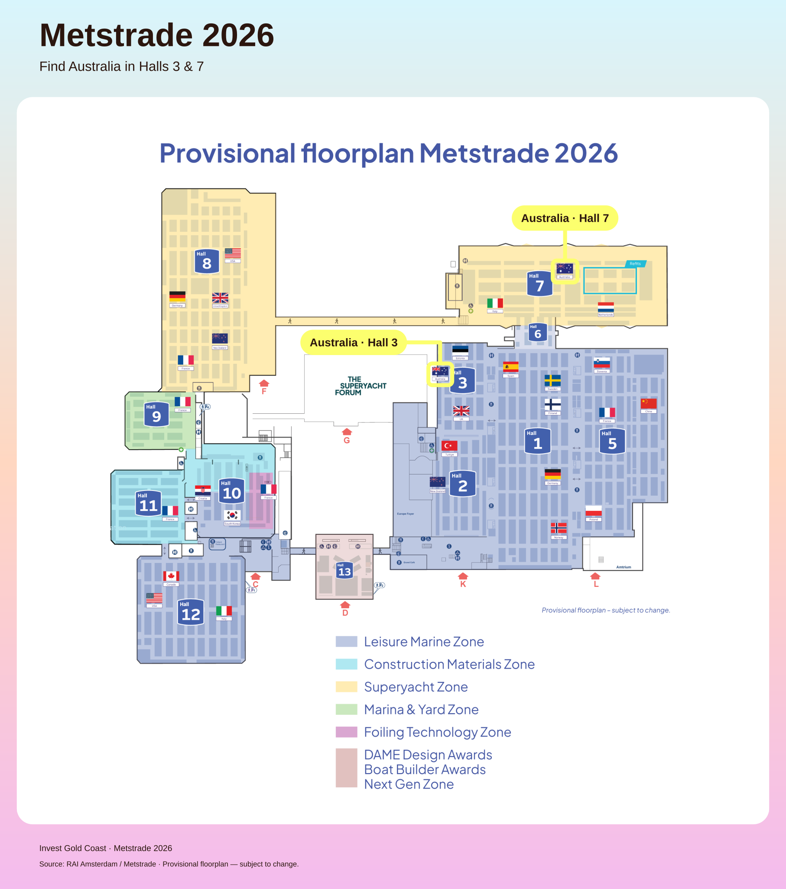

Metstrade Delegate Map
Find Australia in Halls 3 & 7.

Hall 3 · Leisure Marine ZoneHall 7 · Superyacht Zone
Source: RAI Amsterdam / Metstrade floorplan. Provisional plan — subject to change.
Find Australia in Halls 3 & 7.

Source: RAI Amsterdam / Metstrade floorplan. Provisional plan — subject to change.